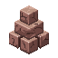

The core loop — scope → plan → red → execute → review → commit → push — is the spine a project rides from first idea to shipped commit. /gabe-red puts the failing test cases on the record before code, and /gabe-next is a pure router that reads .kdbp/PLAN.md and tells you which beat to run next, so in practice you rarely choose manually. Around that spine sit the setup beat (/gabe-init, once per project), session continuity (/gabe-handoff), the human walk record (walks.jsonl — its skill was archived 2026-07-30; the record format survives), and the command-center track (/gabe-cc-update). Every command runs under the same E1–E7 execution contract — the gates below are each command's specific tightening of that shared floor.
01The lifecycle, beat by beat
This is the full cycle as it runs today. Each beat has a software job — building the thing — and a documentation byproduct that falls out of doing that job, never the other way around (see the Standing Correction).
| # | Beat | Command | The job it does | What it leaves behind |
|---|---|---|---|---|
| 1 | Scope | /gabe-scope (+change/pivot) | Turn a raw idea into a stable premise and a phase arc | SCOPE.md — premise + ## Phases |
| 2 | Plan | /gabe-plan | Break a goal into phases; pick a tier; declare the proof before any code | PLAN.md / PLAN.json + tier-decision in DECISIONS.md |
| 3 | Red | /gabe-red | Declare the failing cases and commit the failure before writing source | A red checkpoint (RED: trailer) + the Cases: line + new C-ids |
| 4 | Execute | /gabe-execute | Build — turn the red set green under the tier cap | Checkpoint commits + proof artifacts + LEDGER.md |
| 5 | Review | /gabe-review | Price each finding: fix-cost × defer-risk × maturity gate | PENDING.md (the review-debt lane) + case subjects |
| 6 | Commit | /gabe-commit | The chokepoint quality gate | The commit + a LEDGER.md row + a results digest |
| 7 | Push | /gabe-push | Ship — PR, CI watch, deploy-verify, promote | DEPLOYMENTS.md; a terminal-env write is the release trigger |
| 8 | Walk | append to walks.jsonl | Brief a human, then record their walk — the witness (never a mystery: why this walk, the flow itinerary, what pass means). The /gabe-walk skill is archived (2026-07-30); approvals and walks append the record directly | walks.jsonl → the center's manual angles + staleness |
| 9 | Center | /gabe-cc-update <phase> | Translate a shipped feature into its card + test-strategy audit | A feature card + curated proof → the center's ✅ |
| 10 | Release | /gabe-cc-update release | A stakeholder showcase — a mode, not a beat | Shots + diagrams per shipped version |
| 11 | Router | /gabe-next | Zero-logic dispatch over the PLAN.md status cells | Nothing of its own — it routes |
| — | Advisors | align · assess · debt · health · myopic · roast | Quality judgment on demand, outside the beat loop | Findings → PENDING / DECISIONS / RULES |
Start with /gabe-init, then let /gabe-next drive the loop — it reads .kdbp/PLAN.md and tells you which command to run. Read The development loop for the shape of the cycle and The E1–E7 contract for the shared floor every command below tightens.
02The router in practice
/gabe-next is what makes the loop feel automatic instead of like a checklist you have to remember. It reads exactly one thing — the current phase's status cells — and applies a fixed rule, top to bottom. No judgment calls, no LLM cost, no way for two runs on the same state to disagree.
| Red | Exec | Review | Commit | Push | /gabe-next routes to |
|---|---|---|---|---|---|
| ⬜ | ⬜ | ⬜ | ⬜ | ⬜ | /gabe-red — cases not yet on the record |
| ✅ / — | ⬜ / 🔄 | ⬜ | ⬜ | ⬜ | /gabe-execute — build it green (or resume) |
| ✅ / — | ✅ | ⬜ | ⬜ | ⬜ | /gabe-review — built, not yet reviewed |
| ✅ / — | ✅ | ✅ | ⬜ | ⬜ | /gabe-commit — reviewed, not yet committed |
| ✅ / — | ✅ | ✅ | ✅ | ⬜ | /gabe-push — committed, not yet shipped |
| ✅ / — | ✅ | ✅ | ✅ | ✅ | advance to the next phase, or offer to close the plan |
— means the cell doesn't apply — a shipped row that predates the Red column, or a phase with no center coverage planned. The Red cell only seeds where execution is still to-do, so retrofitting it onto an existing plan never demands a retroactive fake red (decision R1). An optional Center cell, when a plan carries it, routes to /gabe-cc-update after push. Because the rule reads column state rather than session memory, an interrupted session is cheap to resume.
03The gate each beat enforces
These are not the only things each command does — each row is the specific mechanism that turns a claim ("tests pass," "reviewed," "reused") into something demonstrated on screen before the command can proceed. For the generic version of each mechanism, see the mechanism catalog.
The core loop
| Command | Key gate it enforces |
|---|---|
/gabe-scope | Strict checkpoint gating — every major step needs explicit user approval before the next runs, and final assembly reads the current on-disk files first, so a session can never silently clobber a human edit. |
/gabe-plan | Per-phase template discipline — Scope / References / Acceptance / Checkpoint fields plus a declared proof.type (test / visual / journey), so /gabe-red and /gabe-execute always find the same field names. |
/gabe-red | The failure must be real — a case counts as RED only when it fails by assertion on a returning stub; failing by import is non-evidence, and passing on unchanged code is a tautology that halts. The red is committed with a RED: trailer so it's re-derivable later. |
/gabe-next | Prior-row sweep — always prints any owed Review/Push debt from earlier phases before advancing, so incomplete prior work stays visible at every routing decision. |
/gabe-execute | TASK CONTRACT + REUSE LEDGER gate — quote the task text verbatim, classify it, and print a reuse verdict before any Write or Edit; a CASES: line ties the work to the C-ids it must turn green; "verification ✅" is unprintable without an executed command in front of it. |
/gabe-review | Mandatory verify/kill pass with a per-finding Evidence line — an absence claim ("no tests for X") needs search proof, not confidence. Owns case drift and growth triage (capped at 7) on the same risk pricing. |
/gabe-commit | Executed-evidence CHECK gates — every check resolves a real command, shows the evidence row and a 3-state glyph (✅ / ❌ / ⤫ skipped-with-reason); a hardcoded "tests pass" with no command behind it is exactly the failure this closes. Emits the results digest. |
/gabe-push | Pasted CI output required (a pending ⏳ run is never a ✅) plus a deploy-verify smoke probe against the live target — CI can go green while the deployed app is dead, and this is the check that would catch it. |
Setup — run once per project
| Command | Key gate it enforces |
|---|---|
/gabe-init |  Missing-anchor STOP for hook JSON — hook objects are read verbatim from~/.claude/templates/gabe/hooks.json; if that template is absent, init stops and reports rather than composing hook JSON from memory (the worst case being a hallucinated write to a project's settings.json). |
/gabe-cc-init | Archive-never-delete — existing docs are archived, never overwritten, before the command center is bootstrapped; the shortlist is machine-ranked for operator approval, and each ingested section's sign-off is recorded as a walk. |
Session continuity — run when wrapping up
| Command | Key gate it enforces |
|---|---|
/gabe-handoff | Sync-to-observed-reality with per-cell evidence gates — it only ticks a PLAN.md cell backed by a cited command, commit SHA, or git fact, never fabricates a ✅, and never runs the commit/push gates. The counterweight to the lossy automatic session summary. |
The loop's status-cell tick is already a checkpoint (see The development loop § the cadence rule). /gabe-handoff is for the messier reality — a session ending mid-task, with intent and half-finished work the tick alone doesn't capture.
04The rest of the suite, grouped
The commands above are the spine. The full surface groups by role — and the always-current catalog is generated from each skill's own frontmatter, so rather than hand-maintain a list here that goes stale at the next skill, run /gabe-help for the live roster.
| Group | Skills | Where they're documented |
|---|---|---|
| Core beats | scope · plan · red · execute · review · commit · push · next | this page (above) |
| Verification | red · walk | /gabe-red · the command center |
| Command center | feature · adopt · entity | The command center |
| Analysis satellites | roast · myopic · health · debt · assess · align | Analysis satellites |
| Scope authoring | scope · scope-change · scope-pivot | What KDBP is § standing law |
| Setup & session | init · adopt · handoff | this page (above) |
| Engagement kit | lens · mockup · docsite · meme · quip · help | /gabe-help |
| Background | docs | consulted by other skills, not invoked directly |
- Analysis satellites — the six adversarial advisors in full.
- The one picture & the four laws — why the beats are justified by the build, not the docs they emit.
- The mechanism catalog — the generic gate behind each command's "key gate" above.
This page references
Derived from the page's own text on every build — no link table is maintained, and a reference that stops resolving stops appearing.